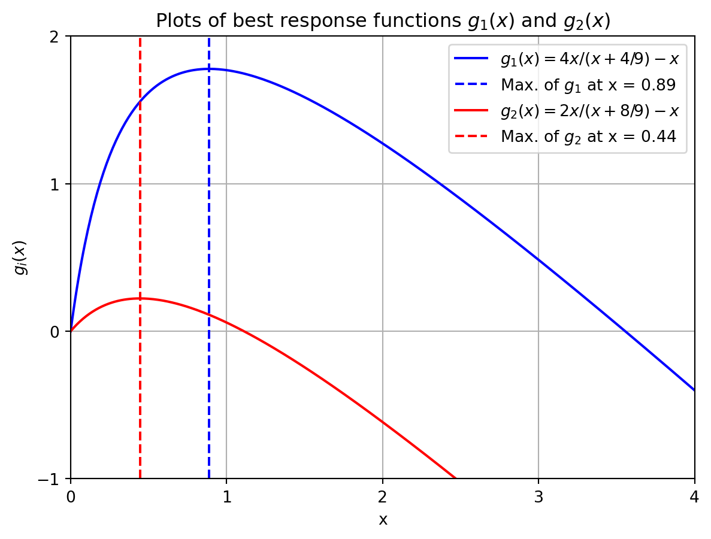

In the previous chapter we saw that (in theory) the proportional allocation rule is a good way to divide the (expected) rewards of mining a unit of cryptocurrency. One aspect that this rule did not take into account is the fact that it costs time and money to guess solutions for the puzzle contest that determines the leader of the next round in the Proof-of-Work protocol.
A more realistic way of denoting the reward, or said better, the (expected) payoff of miner i, is
\frac{\mu_i}{\sum_j \mu_j} - c_i(\mu_i)
where the function c_i : \mathbb{R}_{\geq 0} \rightarrow \mathbb{R}_{\geq 0} is a nondecreasing cost function: The more hashing power miner i uses, the higher the cost c_i(\mu_i) she has to pay. For example, this cost could model the energy consumption of the computers used to guess solutions with. Note that c_i is a miner-specific function.
In this chapter we will allow real values of \mu_i, as opposed to only integer values, so that the payoff of miner i is continuous. For simplicity, we will assume that for every i=1,\dots,n, c_i is a linear function of the form c_i(\mu_i) = a_i\cdot \mu_i for a_i > 0, so that the payoff of miner i becomes
\frac{\mu_i}{\sum_j \mu_j} - a_i \cdot \mu_i.
In the literature, the payoff is often normalized by the value a_i, so that we finally define
p_i(\mu) = w_i \cdot \frac{\mu_i}{\sum_j \mu_j} - \mu_i
where w_i = 1/a_i. This will be the payoff function that we work with in this chapter.
The proportional rule had the property that a miner i could increase its reward by increasing their hash rate \mu_i. If the goal of a miner is to maximize its payoff p_i(\mu), it is no longer necessarily optimal for her to increase her hash rate, because \lim_{\mu_i \rightarrow \infty} p_i(\mu) = -\infty (note that the other hash rates are kept constant in this reasoning).
This gives rise to a strategic consideration for miner i. Knowning the hash rates
\mu_{-i} = (\mu_1,\dots,\mu_{i-1},\mu_{i+1},\dots,\mu_n)
of the other miners, what hash rate \mu_i maximizes the payoff function p_i(\mu)? This setting, in which every miner has the goal of maximizing their indivual payoff function, can be seen as a non-cooperative game. It is important to observe that the payoff of miner i depends on the choices made by the other miners, i.e., the vector \mu_{-i}!
The assumption here that we know the hash rates of all the other miners is quite strong, but not necessarily unrealistic. If we interpret the miners as mining pools, then in real-life there are good estimates of the hash rates of these pools, see for example the overview here.
In the next section we will summarize the above setting, known as a Tullock contest. Although we approach this problem from the perspective of blockchains, Tullock contests have many more application areas. For example, think of an election, where different candidates invest money in their campaign, but only one candidate can win in the end.
8.1 Tullock contest
A Tullock contest is a winner-takes-all game in which there are n miners (also called contestants or players). Every miner has strategy spaceS_i = \mathbb{R}_{\geq 0} from which she chooses a strategy (i.e., hash rate) \mu_i \geq 0. The vector \mu is called a strategy profile.
The goal of every miner is to maximizer their payoff function
p_i(\mu) = w_i \cdot \frac{\mu_i}{\sum_j \mu_j} - \mu_i.
We make one conventional assumption, which is that p_i(0,0,\dots,0) = 0, i.e., if all the hash rates are 0 then every player has a payoff of 0. Observe that the Tullock contest is completely described by its input parametersw_1,\dots,w_n.
How is this game played? There are many ways to define the dynamics of the game; we will consider an elementary setting. Suppose that at the start of the game, every miner i has chosen some hash rate \mu_i and that all miners know the hash rate vector \mu = (\mu_1,\dots,\mu_n).
We first allow miner 1 to change it hash rate \mu_1 so that its payoff function p_1(\mu) is maximized (while keeping the other hash rates \mu_j fixed). Suppose miner 1 changes to hash rate \mu_1'. Next, we allow miner 2 to change its hash rate \mu_2 to maximze its payoff function p_2(\mu_1',\mu_2,\dots,\mu_n). We keep repeating this process until all miners i have had the option to change their hash rate to some othe rate \mu_i'. Then we go back to the first miner.
Because one or more miners might have changed their initially chosen hash rate, the payoff of miner 1 might have changed in the meantime, in which case they need to re-optimize their payoff. We keep iterating over the miners until we reach the point where no miner has an incentive to change its hash rate under the present hash rate vector, i.e., until we have reached an equilibrium state.
One question that should be in your mind right now is the following: Are the above-described dynamics guaranteed to converge, i.e., is it guaranteed that in a finite number iterations we reach an equilibrium state? How do we describe the resulting equilibrium state mathematically? These are questions we will explore in the coming sections.
As a final remark here: The most important aspect of the dynamics is that at most one miner at a time changes it hash rate. It is also possible to consider dynamics in which miners can change simulateously, but we do not allow this for now.
8.2 Pure Nash equilibrium
We start this section with a mathematical description of an equilbrium state. A unitlateral deviation of miner i to hash rate \mu_i' is described by the hash rate vector
(\mu_i',\mu_{-i}) = (\mu_1,\dots,\mu_{i-1},\mu_i',\mu_{i+1},\dots,\mu_n),
i.e., the vector in which only miner i changes its rate, while all the other rates are kept fixed. An equilibrium, also called pure Nash equilibrium, is a hash rate vector in which no miner i can unilaterally deviate in order to improve her payoff. We next give the formal definition of this statement.
Definition 8.1 (Pure Nash equilibrium) A hash rate vector \mu is a pure Nash equilibrium (PNE) if for all i = 1,\dots,n, it holds that
p_i(\mu) \geq p_i(\mu_i',\mu_{-i})
for all \mu_i' \geq 0.
Another way to look at the inequalities in the definition of a pure Nash equilibria \mu is that for every i the value \mu_i maximizes the best response function
g_i(x) = p_i(x,\mu_{-i}),
i.e., the function in which the hash rates of all the other miners are kept fixed.
There is a small technical issue if \mu_{-i} is the all-zeros vector, in which case the best response of player i is to send x \rightarrow 0. We will instead assume that in this case the best response of miner i is to set \mu_i = \delta with \delta > 0 very small, such as \delta = 10^{-10} \cdot \min_i w_i.
You might have seen the concept of a Nash equilibrium in an earlier game theory course. A Nash equilbrium is usually defined as a probability distribution over all possible strategies (i.e., all possible hash rates in our case). By using the term “pure”, we emphasize that we do not allow randomization over strategies, but that every miner deterministically (meaning with probability 1) chooses a hash rate.
Let us look at a small example in which we verify the definition of a pure Nash equilibrium for a given vector \mu. Let us take w_1 = 4 and w_2 = 2, so that
p_1(\mu) = p_1(\mu_1,\mu_2) = 4 \cdot \frac{\mu_1}{\mu_1 + \mu_2} - \mu_1
and
p_2(\mu) = p_2(\mu_1,\mu_2) = 2 \cdot \frac{\mu_2}{\mu_1 + \mu_2} - \mu_2
and recall that by convention, we have p_1(0,0) = p_2(0,0) = 0.
We claim that \mu = (8/9,4/9) is a pure Nash equilibrium of this game. We need to show that \mu_1 = 8/9 maximizes the best response function
g_1(x) = 4 \cdot \frac{x}{x + 4/9} - x
of the first miner, and that \mu_2 = 4/9 maximizes the best response function
g_2(x) = 2 \cdot \frac{x}{8/9 + x} - x
of the second miner. This is illustrated in the Python figure below.
Show code generating the plot below
import numpy as npimport matplotlib.pyplot as pltfrom scipy.optimize import minimize# Define the functions g1(x) and g2(x)def g1(x):return4* x / (x +4/9) - xdef g2(x):return2* x / (x +8/9) - x# Generate x valuesx = np.linspace(0, 4, 400)# Calculate the corresponding y values for both functionsy1 = g1(x)y2 = g2(x)# Function for maximization of g1def neg_g1(x):return-g1(x)# Function for maximization of g2def neg_g2(x):return-g2(x)# Minimize the negative of the functions to find the maximumresult_g1 = minimize(neg_g1, 1)result_g2 = minimize(neg_g2, 1)# Extract the x values at the maximax_max_g1 = result_g1.x[0]x_max_g2 = result_g2.x[0]# Calculate the corresponding y-values at the maximay_max_g1 = g1(x_max_g1)y_max_g2 = g2(x_max_g2)# Create the plotplt.figure()# Plot functions and maximaplt.plot(x, y1, label=r"$g_1(x) = 4x/(x + 4/9) - x$", color='blue')plt.axvline(x_max_g1, color='blue', linestyle='--', label=f"Max. of $g_1$ at x = {x_max_g1:.2f}")plt.plot(x, y2, label=r"$g_2(x) = 2x/(x + 8/9) - x$", color='red')plt.axvline(x_max_g2, color='red', linestyle='--', label=f"Max. of $g_2$ at x = {x_max_g2:.2f}")# Add titles and labelsplt.title("Plots of best response functions $g_1(x)$ and $g_2(x)$")plt.xlabel("x")plt.ylabel(f"$g_i(x)$")plt.xlim(0,4)plt.ylim(-1,2)plt.legend()plt.xticks([0,1,2,3,4])plt.yticks([-1,0,1,2])# Show the plotplt.grid(True)plt.show()

We can formally prove this with some elementary calculus,1 which we will do next for the first miner. We have to show that x = 8/9 maximizes the best response function g_1. Note that we want to compute the maximum of the function g_1(x) on the interval [0,\infty). Observe that g_1(0) = 0 and \lim_{x \rightarrow \infty} g_1(x) = -\infty. Furthermore, g_1 is strictly concave on [0,\infty), as the second derivative g_1''(x) < 0 there. This means that g_1 has an internal maximum on (0,\infty) if the equation g_1'(x) = 0 has a solution on [0,\infty), i.e., if the first derivative is 0 for a point in that interval. Otherwise, g_1 is decreasing in which case the maximum is attained in x = 0 and g_1'(0) \leq 0 . Show yourself that x = 8/9 is indeed a solution to g_1'(x) = 0.
The above example shows that for a given \mu we can show with elementary calculus whether or not it satisfies the definition of a pure Nash equilibrium (convince yourself that this approach also works for games with more than two miners).
Exercise 8.1
Consider a game with three miners whose payoff functions are
p_i(\mu_1,\mu_2,\mu_3) = w_i \cdot \frac{\mu_i}{\mu_1 + \mu_2 + \mu_3} - \mu_i
for i = 1,2,3 with w_1 = 4, w_2 = 2 and w_3 = 0.5. Show that \mu = (8/9,4/9,0) is a pure Nash equilibrium of this game (part of your solution should be to formalize the calculations above).
8.2.1 Computation for n = 2
To determine a pure Nash equilibrium of the game, we do not want to keep guessing solutions by checking the definition. Instead we want a constructive way to compute an equilibrium given the payoff functions of the miners. For a game with two miners, this is the purpose of the next exercise.
The reasoning in the example of the previous section can be very helpful to successfully solve the coming exercise, so make sure you understand that example.
Exercise 8.2
Let w_1 \geq w_2 > 0 and consider the payoff functions
p_1(\mu) = w_1 \cdot \frac{\mu_1}{\mu_1 + \mu_2} - \mu_1 \ \text{ and } \ p_2(\mu) = w_2 \cdot \frac{\mu_2}{\mu_1 + \mu_2} - \mu_2.
Compute the (unique) pure Nash equilibrium \mu = (\mu_1,\mu_2) of this Tullock contest by deriving explicit formulas for \mu_1 = \mu_1(w_1,w_2) and \mu_2 = \mu_2(w_1,w_2), i.e., the equilibrium hash rates in terms of w_1 and w_2. You can use the following steps for this:
Show that if one or both of the \mu_i equal zero, then \mu = (\mu_1,\mu_2) cannot be a pure Nash equilibrium. Recall that a best response for miner i is to choose a (small) hash rate of \delta > 0 when all other miners have hash rate 0 (see remark under PNE definition).
Argue next that \mu is a pure Nash equilibrium if and only if the following first-order conditions are satisfied:
\frac{\partial p_1}{\partial \mu_1}(\mu) = 0 \ \text{ and }\ \frac{\partial p_2}{\partial \mu_2}(\mu) = 0.
Solve the first-order conditions for \mu_1 and \mu_2 in terms of w_1 and w_2.
8.2.2 Computation for n > 2
The approach above can be extended to games with more than two miners. There even exists a closed-form solution for the (unique) pure Nash equilibrium. We do not go into this exact closed-form solution, but we give a short sketch of how to obtain the equilibrium for n miners. We will assume that w_1 \geq w_2 \geq \dots \geq v_n. You can do this without loss of generality by renumbering the miners if needed.
First, it can be argued (just as we did in the exercise above) that in a pure Nash equilibriu \mu at least two entries must be strictly positive. This implies that for every i, the quantity \sum_{j \neq i} \mu_j > 0 (do you understand why)?
Second, the pure Nash equilibrium \mu must satisfy the first order conditions
\left\{
\begin{array}{ll}
\frac{\partial p_i}{\partial \mu_i}(\mu) = 0 & \text{ if } \mu_i > 0 \\[1ex]
\frac{\partial p_i}{\partial \mu_i}(0) \leq 0 & \text{ if } \mu_i = 0
\end{array}
\right.
That is, if \mu_i > 0 then it is an internal maximizer of the best response function g_i, and if \mu_i = 0, then it must be that the best response function is decreasing, which is equivalent to the derivative in zero being nonnegative; the concavity of g_i then implies that the function is decreasing on [0,\infty).
The problem now is that we do not know a priori which \mu_i’s will be zero, and which will be strictly great than zero. It turns out, though, that there is some nice structure in this regard: If w_i \geq w_j and \mu_i = 0, then also \mu_j = 0 (this is a somewhat tricky calculus exercise). Recall that we assumed that w_1 \geq w_2 \geq \dots \geq w_n. This means that in the pure Nash equilibrium, if one or more miners have \mu_i = 0, then there exists an index \hat{n} such that all zeros in the equilibrium are attained for indices i = \hat{n}+1,\dots,n, i.e., the equilibrium is of the form
\mu = (\mu_1,\dots,\mu_{\hat{n}},0,0,\dots,0).
There exists an explicit formula known for \hat{n}, namely
\hat{n} = \max\left\{i \in [n] : w_i > \frac{i-2}{\sum_{j=1}^{i-1} \frac{1}{w_j}} \right\}.
\tag{8.1} In other words, \hat{n} is the largest index i for which the inequality w_i > \frac{i-2}{\sum_{j=1}^{i-1} \frac{1}{w_j}} holds. We use the convention that \sum_{j=1}^0 \frac{1}{w_j} = 1.
Note that \hat{n} can be computed using only the input parameters w_1, \dots, w_n of the Tullock contest. Also observe that we always have \hat{n} \geq 2, because we assume the w_i to be strictly positive. This correspond with the fact that in a pure Nash equilibrium, there will always be at least two miners with a strictly positive hash rate. Proving the correctness of the formula for \hat{n} requires some nontrivial arguments, that we omit here.
The remaining (strictly positive) values of \mu_1,\dots,\mu_{\hat{n}} can be determined by solving the system of equations
\frac{\partial p_i}{\partial \mu_i}(\mu) = 0 \ \text{ for } \ i = 1,\dots,\hat{n}
\tag{8.2} with \mu_{\hat{n}+1} = \dots = \mu_n = 0 substituted in these equations. This leaves a (non-linear) system of \hat{n} equalities with \hat{n} unknown variables.
“Solving” this system means that we would like to express the \mu_i as a function of the input parameters w_1,\dots,w_n, just as we did in the exercise earlier in this section with n = 2.
Exercise 8.3
This exercise is dedicated to solving the system of equations in Equation 8.2 to determine the strictly positive \mu_i in the pure Nash equilibrium.
Show that the system in Equation 8.2 is equivalent to the equations
\mu_i = \left(\sum_{j=1}^{\hat{n}} \mu_j\right) - \frac{1}{w_i} \left(\sum_{j=1}^{\hat{n}} \mu_j\right)^2 \ \text{ for } i = 1,\dots,\hat{n}
Define \lambda = \sum_{j=1}^{\hat{n}} \mu_j. Determine an equation for \lambda by adding up all the equations of part 1.
Solve the resulting equation for \lambda to show that
\lambda = \lambda(w_1,\dots,w_n) = \frac{\hat{n} - 1}{\sum_{j=1}^{\hat{n}} \frac{1}{w_j}}.
Note that we can then finally express the \mu_i as a function of w_1,\dots,w_n (through \lambda) by
\mu_i = \lambda - \frac{1}{w_i}\lambda^2
for i = 1,\dots,\hat{n}.
Exercise 8.4
Consider the Tullock contest with w_1 = 4, w_2 = 2, w_3 = 0.5 and w_4 = 0.2. Compute the value of \hat{n} and use the formulas of the previous exercise to show that \mu = (8/9,4/9,0,0) is the pure Nash equilibrium of this game (i.e., compute \lambda and then \mu_1 and \mu_2 using \lambda).
To summarize, we have the following theorem.
Theorem 8.1 (Equilibrium computation with n miners.) Let w_1 \geq \dots \geq w_n > 0 and
\hat{n} = \max\left\{i \in [n] : w_i > \frac{i-2}{\sum_{j=1}^{i-1} \frac{1}{w_j}} \right\}.
Then the (unique) pure Nash equilibrium \mu = (\mu_1,\dots,\mu_n) of the Tullock contest is given by
\mu_i = \left\{
\begin{array}{ll}
\lambda - \frac{1}{w_i}\lambda^2 & \text{ for } i \leq \hat{n} \\
0 & \text{ for } i > \hat{n}
\end{array}
\right. \ \ \text{ with } \ \ \ \lambda = \frac{\hat{n} - 1}{\sum_{j=1}^{\hat{n}} \frac{1}{w_j}}.
Exercise 8.5
Consider the Tullock contest with w_1 = w_2 = \dots = w_n = w. Use Theorem 8.1 to show that its pure Nash equilibrium is given by \mu = (\mu_1,\dots,\mu_n) with
\mu_i = \frac{n-1}{n^2}w
for i = 1,\dots,n. This is called a symmetric pure Nash equilibrium, because all \mu_i are the same.
Exercise 8.6
We will derive a concise expression for the market share x_i(\mu) = \mu_i/(\sum_j \mu_j) of miner i in the pure Nash equilibrium.
Show that x_i(\mu) = 1 - \frac{1}{w_i}\lambda for i = 1,\dots,\hat{n} with \lambda as in Theorem 8.1.
Based on part 1., show that
x_i(\mu) = \max\left\{0,1 - \frac{1}{w_i}\lambda\right\}
for i = 1,\dots,n.
8.3 Best response dynamics
We conclude this chapter with some remarks about best response dynamics. Formally, such dynamics are defined as an iterative process where in every iteration, given a hash rate profile \mu = (\mu_1,\dots,\mu_n) one miner i gets to compute their best response against \mu_{-i}, i.e., maximize their best response function g_i(x) = p_i(x,\mu_{-i}). We keep repeating this procedure until no miner wants to change their hash rate anymore.
By solving the first order conditions, and recalling that the best response to the all-zeros vector \mu_{-i} = (0,\dots,0) is a small number \delta, we can express the best response of miner i given \mu_{-i} as
\text{BR}_i(\mu_{-i}) = \left\{
\begin{array}{ll}
\delta & \text{ if } \sum_{j \neq i} \mu_j = 0 \\
\sqrt{w_i(\sum_{j \neq i} \mu_j)} - \sum_{j \neq i} \mu_j & \text{ if } 0 < \sum_{j\neq i} \mu_j < w_i \\
0 & \text{ if } \sum_{j \neq i} \mu_j \geq w_i
\end{array}
\right.
Exercise 8.7
Verify the correctness of the formula for \text{BR}_i above.
We will assume the iterative process is done in a round-robin fashion, that is, we iterate over miners 1,\dots,n and then start at miner 1 again. More precisely, the miner updating their best response in round t is i = t \text{ mod } n. The pseudo-code of best response dynamics is therefore as follows.
Best response dynamics1. Initialize - Weight vector w = [w_1,..,w_n] - Initial hash rate vector mu = [mu_1,...,mu_n] - Number of rounds T - Parameter delta (best response against all-zeros vector).2. In each round t = 1,2,3,...,T do: - Compute best response of miner i = t (mod n) - Update value mu_i with the computed best response
A Python implementation of this procedure with n = 4 miners is given below with
w = (5, 2, 0.5, 0.2)
\mu = (1,1,1,1)
T = 40
\delta = 1/(w_{\max}\cdot n^3) \approx 0.0039 (any small enough number is allowed here).
Show code for executing best response dynamics
import numpy as npimport pandas as pd# Weight vectorw = np.array([4, 2, 0.5, 0.2])# Number of minersn = np.size(w)# Initial hash rate vectormu = np.array([1.0, 1.0, 1.0, 1.0])# Number of best response iterationsT =40# Value of delta (brd against all-zeros vector)delta =1/(np.max(w)*n**3)# Function that computes best response for miner i given hash rate vector mudef best_response(i, mu, wi, delta): rate_minus_i = np.sum(mu) - mu[i]if np.allclose(rate_minus_i, 0): # First BRD case br = deltaelif (rate_minus_i >0) & (rate_minus_i <= wi): # Second BRD case br = np.sqrt(wi * rate_minus_i) - rate_minus_ielif rate_minus_i > wi: # Third BRD case br =0return br# Executing best response dynamics proceduredef best_response_dynamics(w,mu,T,delta):# Create an empty list to store the results mu_history = []# Append initial hash rate vector to results list mu_history.append(mu.copy())for t inrange(T): i = np.mod(t, n) mu[i] = best_response(i, mu, w[i], delta) mu_history.append(mu.copy()) # Append hash rate vector to results list# Convert the mu_history list to a pandas DataFrame mu_df = pd.DataFrame(mu_history, columns=[f'mu_{i+1}'for i inrange(n)])# Add an "Iteration" column for the index mu_df.insert(0, 'Iteration', np.arange(T +1))# Display the DataFrame without the index column results = mu_df.to_string(index=False)return resultsbrd = best_response_dynamics(w,mu,T,delta)print(brd)
In the output above we can see that the vector \mu seems to converge to (8/9,4/9,0,0) which was indeed the PNE that we saw earlier in this chapter for this specific choice of weight vector w (see Exercise 8.4). It should be noted though, that we never exactly reach this vector \mu. The dynamics converges to the PNE over time, but does not attain it in a finite number of iterations.
To deal with this, we can look at a relaxed equilibrium notion, called the \epsilon-approximate pure Nash equilibrium (\epsilon-PNE). Intuitively, if \mu is an \epsilon-PNE then some miners might have an incentive to deviate, but the improvement in payoff that this will give them is at most an additive term \epsilon. Note that a pure Nash equilibrium is an \epsilon-PNE for \epsilon = 0.
Definition 8.2 (\epsilon-approximate Pure Nash equilibrium) A hash rate vector \mu is an \epsilon-approximate pure Nash equilibrium (PNE) if for all i = 1,\dots,n, it holds that
p_i(\mu) \geq p_i(\mu_i',\mu_{-i}) - \epsilon
for all \mu_i' \geq 0.
We can now instead run the dynamics until an \epsilon-PNE is found. The updated pseudo-code is given below.
Best response dynamics for computing epsilon-PNE1. Initialize - Weight vector w = [w_1,..,w_n] - Initial hash rate vector mu = [mu_1,...,mu_n] - Number of rounds T - Parameter delta (best response against all-zeros vector). - Parameter epsilon2. While mu is not an epsilon-PNE, do: - Compute best response of miner i = t (mod n) - Update value mu_i with the computed best response
In general, best response dynamics are not guaranteed to converge to an (\epsilon-)PNE. This means that the while-loop in the pseudo-code above is not guaranteed to terminate. Let us look at such an example with two miners and \epsilon = 0.
# Weight vectorw = np.array([0.1, 1])# Number of minersn = np.size(w)# Number of best response iterationsT =12# Value of delta (best reponse against all-zeros vector)delta =10**(-5)# Initial hash rate vectormu = np.array([0,delta])# Function best_response_dynamics() is defined in previous snippetbrd = best_response_dynamics(w,mu,T,delta)print(brd)
After t = 6 iterations we are back at the hash rate vector that we started with! And so, the best response dynamics keeps cycling through the first six hash rate vectors in the above list without ever approaching the PNE of the game.
This means we have to reflect a bit on what we did before. We studied the pure Nash equilibrium as “natural” outcome of the best response dynamics process, but the dynamics is not guaranteed to end up there! Despite the existence of examples where the best response dynamics does not converge, it does converge in many cases, though.
One class where best response dynamics are guaranteed to converge is when the miners have a common value w_1 = \dots = w_n = w as in the symmetric setting we considered in Exercise 8.6. For simplicity, we will set w = 1. The common payoff function of all miners i = 1,\dots,n is then
p_i(\mu) = \frac{\mu_i}{\sum_j \mu_j} - \mu_i.
8.3.1 Potential function
We can use a (best response) potential function argument to show that best response dynamics always converge under equal payoff functions. The idea of such an argument is to construct a (bounded from above) function P : \mathbb{R}^n_{\geq 0} \rightarrow \mathbb{R} that takes as input a hash rate vector \mu = (\mu_1,\dots,\mu_n) and outputs a real number. Bounded from above here means that there exists a constant c \in \mathbb{R} such that P(\mu) \leq c for all \mu \in \mathbb{R}^n_{\geq 0}.
The function P will be constructed in such a way that if a miner i makes a best response move in \mu = (\mu_1,\dots\mu_{i-1},\mu_{i},\mu_{i+1},\mu_n) = (\mu_i,\mu_{-i}) to \mu' = (\mu_1,\dots\mu_{i-1},\mu_{i}',\mu_{i+1},\mu_n) = (\mu_i',\mu_{-i}), i.e, miner i unilaterally deviates from \mu_i to \mu_i', then the value of P(\mu') will be higher than P(\mu). In other words, whenever a miner makes a best response move, the value of the potential function goes up.
Because P is bounded from above, the intuition is that if we perform enough best response rounds, and increase the potential function value in every round a little bit, then we must get close to an (approximate) pure Nash equilibrium in a finite number of steps, because the potential function is bounded from above and so it cannot increase indefinitely. There is a small caveat in this reasoning, which is that the increments might get smaller and smaller (as we saw in one of the examples above as well), so we need to guarantee that enough “progress” is made in every round. We will get back to this last point later on.
For now, let us look at a potential function that has the property that its value increases whenever a miner makes a best response move. To find such a function, you typically have to make an educated guess and show that it does what it needs to do. In our setting, we can define
P(\mu) = -\frac{1}{3}\left(\sum_{i=1}^n \mu_i\right)^3 + \sum_{i < j } \mu_i\mu_j
as the potential function. As an example, for n = 3, we have
P(\mu) = -\frac{1}{3}\left(\mu_1 + \mu_2 + \mu_3\right)^3 + \mu_1\mu_2 + \mu_1\mu_3 + \mu_2\mu_3.
We have to address one technicality with respect to the domain of the function P. Recall that, to avoid limit arguments, we define the best response of a miner i to be a small (fixed) number \delta whenever the hash rates of all the other miners are zero in \mu. To deal with this appropriately in the potential function P, we formally define P as a function P : \mathbb{R}^n_{\geq 0} \setminus (\cup_{i=1}^n Z_i) \rightarrow \mathbb{R} where for i = 1,\dots,n,
Z_i = \{ (0,\dots,0,\mu_i,0,\dots,0) : 0 \leq \mu_i < \delta \}.
That is, we do not allow hash rate vectors \mu with one non-zero entry that is smaller than \delta.
We first show that the function P is indeed bounded from above.
Exercise 8.9
Show that P(\mu) \leq \frac{2}{3} for all \mu \in \mathbb{R}^n_{\geq 0}. Hint: Use that \sum_{i <j} x_ix_j \leq (\sum_i x_i)^2 and then the substitution y = \sum_i x_i.
In fact, we can show a stronger result, namely that P has a global maximizer. Recall that in Exercise 8.5, we showed that the PNE \mu of a symmetric Tullock contest is given by \mu_i = (n-1)/n^2 for i = 1,\dots,n if w = 1. It can be shown that this \mu is the global maximizer of P over its formal domain, as well as over \mathbb{R}^n_{\geq 0}.
Exercise 8.10
For n = 2, show that \mu = (\frac{1}{4},\frac{1}{4}) is the global maximizer of
P(\mu) = -\frac{1}{3}\left(\mu_1 + \mu_2 \right)^3 + \mu_1\mu_2
on \mathbb{R}^{2} by executing the following steps (that together analyse P on the whole of \mathbb{R}^2):
Show that P(\mu) \leq 0 for all \mu \in \{ (\mu_1,\mu_2) : \mu_1 + \mu_2 > 3, \mu_1, \mu_2 \geq 0\}.
Show that P(\mu) \leq 0 on the boundary of the set
D = \{ (\mu_1,\mu_2) : \mu_1 + \mu_2 \leq 3, \mu_1, \mu_2 \geq 0\}.
Show that in the interior of D, we have
\nabla P = \left( \frac{\partial P}{\partial \mu_1}, \frac{\partial P}{\partial \mu_2}\right) = (0,0)
if and only if \mu = (\frac{1}{4},\frac{1}{4}).
Conclude from the above three steps that \mu = (\frac{1}{4},\frac{1}{4}) is indeed the global maximizer of P.
With a bit more effort, the above exercise can be generalized to an arbitrary value of n (feel free to try this yourself).
Now comes the most important part: We want to show that if a miner makes a best response, then the potential function increases. This is summarized in the following theorem, that states that doing a single-variable optimization of P over \mu_i yields the same optimal point as computing a best response of miner i.
Theorem 8.2 (Best response potential function) Let w_1 = \dots = w_n = 1 so that the common payoff function of miners i = 1,\dots,n is given by
p_i(\mu) = \frac{\mu_i}{\sum_j \mu_j} - \mu_i.
Then for any \mu \in \mathbb{R}^n_{\geq 0} \setminus (\cup_{i=1}^n Z_i), it holds that
\text{argmax}_{x \geq 0} P(x,\mu_{-i}) = \text{argmax}_{x \geq 0} p_i(x,\mu_{-i}).
Exercise 8.11
Show that for a given fixed \mu_{-i}, it holds that
\text{argmax}_{x \geq 0} P(x,\mu_{-i}) = \left\{
\begin{array}{ll}
\delta & \text{ if } \sum_{j \neq i} \mu_j = 0 \\
\sqrt{\sum_{j \neq i} \mu_j} - \sum_{j \neq i} \mu_j & \text{ if } 0 < \sum_{j\neq i} \mu_j < 1 \\
0 & \text{ if } \sum_{j \neq i} \mu_j \geq 1
\end{array}
\right.
which shows that \text{argmax}_{x \geq 0} P(x,\mu_{-i}) is the same function as \text{BR}_i(\mu_{-i}) = \text{argmax}_{x \geq 0} p_i(x,\mu_{-i}), and thereby proves Theorem 8.2.
Let us finally illustrate that the function P indeed increases by considering a small example of best response dynamics with initial hash rate vector \mu = (2,3). Recall that w_1 = w_2 = 1.
Show code for best response dynamics with potential function values
import numpy as npimport pandas as pd# Weight vectorw = np.array([1, 1])# Number of minersn = np.size(w)# Initial hash rate vectormu = np.array([2.0,3.0])# Number of best response iterationsT =5# Value of delta (brd against all-zeros vector)delta =1/(np.max(w)*n**3)# Function that computes best response for miner idef best_response(i, mu, wi, delta): rate_minus_i = np.sum(mu) - mu[i]if np.allclose(rate_minus_i, 0): br = deltaelif (rate_minus_i >0) & (rate_minus_i <= wi): br = np.sqrt(wi * rate_minus_i) - rate_minus_ielif rate_minus_i > wi: br =0return br# Function to compute P(mu)def compute_P(mu):return-1/3* (mu[0] + mu[1])**3+ mu[0] * mu[1]# Executing best response dynamics proceduredef best_response_dynamics(w, mu, T, delta):# Create an empty list to store the results mu_history = [] P_history = []# Append initial hash rate vector to results list mu_history.append(mu.copy()) P_history.append(compute_P(mu))for t inrange(T): i = np.mod(t, n) mu[i] = best_response(i, mu, w[i], delta) mu_history.append(mu.copy()) P_history.append(compute_P(mu))# Convert the mu_history and P_history lists to a pandas DataFrame mu_df = pd.DataFrame(mu_history, columns=[f'mu_{i+1}'for i inrange(n)])# Add an "Iteration" column for the index mu_df.insert(0, 'Iteration', np.arange(T +1))# Add P(mu) as an extra column mu_df['P(mu)'] = P_history# Display the DataFrame without the index column results = mu_df.to_string(index=False)return resultsbrd = best_response_dynamics(w, mu, T, delta)print(brd)
Now that we now that the potential function value increases in ever round of the best response dynamics, what is left is to argue that the dynamics reaches a hash rate vector that comes close to the global maximizer of P, which is the PNE of the Tullock contest.
This turns out to be a highly nontrivial task, but some results are known in the literature on Tullock contests. Here we (informally) mention one such a result.
Theorem 8.3 (Ghosh and Golberg, 2023) Consider an initial hash rate vector \bar{\mu} and let \epsilon > 0. Then best response dynamics for n = 2 miners with w_1 = w_2 = 1 reaches an \epsilon-PNE in at most
T = \log_2\left(\log_2\left(\frac{1}{\epsilon}\right)\right) + C_{\bar{\mu}}
rounds, where C_{\bar{\mu}} is a constant number depending on \bar{\mu}, but independent of \epsilon.
Note that this means the convergence goes quite quickly with respect to \epsilon. For example, for \epsilon = 10^{-10} we have \log_2(\log_2(1/\epsilon)) \approx 5. The proof of Ghosh and Golberg (2023) makes use of the best response potential function P that we introduced, but the analysis is very involved and beyond the scope of this course.
8.4 Two model variations
In this section we will study extensions of the basic Tullock contest, in which the payoff functions are of the form
p_i(\mu) = u_i\left(\frac{\mu_i}{\sum_j \mu_j}\right) - \mu_i
where the u_i: \mathbb{R}_{\geq 0} \rightarrow \mathbb{R} are given functions for i = 1,\dots,n.
We will first consider the setting where the u_i are concave functions, modeling risk averse miners as in Section 7.3. We will also consider a case corresponding to a so-called economy of scale. Here we provide some evidence why there tend to be only a couple of “big players” in the mining contest.
8.4.1 Concave utilities
In this section we assume that the utility function of miner i is given by
p_i(\mu) = u_i\left(\frac{\mu_i}{\sum_j \mu_j}\right) - \mu_i
with u_i a strictly increasing, concave function with u_i(0) = 0 for i = 1,\dots,n.
Also for these payoff functions, we make the assumption that a best response of miner i against the all-zeros hash rate vector is a sufficiently small number \delta > 0. For our purposes below, it will be sufficient to choose \delta = 10^{-1}\cdot \min_i u_i(\frac{1}{2}). Note that \delta > 0 because we assume u_i(0) = 0 and u_i to be strictly increasing.
Tullock contests of this form still have a pure Nash equilibrium, but it can no longer be explicitly computed as in Theorem 8.1, nor is a potential function known (whose maximizer is the pure Nash equilibrium) that can be used to analyze best response dynamics for this setting.
Nevertheless, it turns out we can compute a PNE by solving a (concave) maximization problem!2 To be more precise, if we define
x_i = \frac{\mu_i}{\sum_j \mu_j}
as the market share (or winning probability) of miner i, we can determine the optimal market shares by solving an optimization problem. Because the problem turns out to be a concave maximization problem, there exist many efficient optimization algorithms that can solve this problem quickly!
From the solution we can also obtain the individual hash rates \mu_i for i = 1,\dots,n. We will discuss the second point after showing the main result for the market shares.
The (concave) maximization problem for determining the shares x_i is given in the theorem below. We will prove its correctness by showing that the first-order conditions of a PNE correspond to the KKT conditions (see Section 2.4) of the optimization problem.
Theorem 8.4 (Computing pure Nash equilibrium under concave utilities) Suppose that the payoff of miner i=1,\dots,n is given by
p_i(\mu) = u_i\left(\frac{\mu_i}{\sum_j \mu_j}\right) - \mu_i
with u_i a strictly increasing, concave function with u_i(0) = 0 for i = 1,\dots,n. Then the market shares x_i = \frac{\mu_i}{\sum_j \mu_j} of a pure Nash equilibrium of the resulting Tullock contest can be computed by solving the concave maximization problem
\begin{array}{lll}
\displaystyle \max_{x \in \mathbb{R}^n} & \displaystyle \sum_{i=1}^n \hat{u}_i(x_i) & \\
\displaystyle\text{subject to} & \displaystyle \sum_i x_i = 1 & \\
\displaystyle & x_i \geq 0 & \text{ for } i = 1,\dots,n
\end{array}
where for i = 1,\dots,n we have
\hat{u}_i(x_i) = (1-x_i)u_i(x_i) + \int_0^{x_i} u_i(z) \mathrm{d}z.
Exercise 8.12
Show that \hat{u}_i(x_i) = w_ix_i\left(1 - \frac{1}{2}x_i\right) for u_i(z) = w_i z.
Proof of Theorem 8.4. We first argue that if \mu is a PNE, then at least two miners have a strictly positive hash rate. (Recall that this was also the case in the basic model in Section 8.2.)
Claim 1: If \mu \in \mathbb{R}^n_{\geq 0} is a PNE, then at least two miners have a strictly positive hash rate.
Proof of Claim 1. First suppose that \mu = (0,0,0,\dots,0) is the all-zeros vector. Note that then p_i(\mu) = u_i(0) - 0 = 0 for every i. Now any fixed miner can improve their utility by playing \delta. For example, if miner i = 1 deviates to \mu_1' = \delta, we obtain p_i(\mu_1',\mu_{-1}) = u_i(1) - \delta > 0 by our choice of \delta = 10^{-1}\cdot \min_i u_i(\frac{1}{2}).
Second, suppose that exactly one miner i has strictly positive hash rate in \mu. Then this miner chooses their hash rate as small as possible, i.e., \mu_i = \delta, to maximize their payoff. Now any other miner j \neq i can improve their payoff by also choosing \mu_j' = \delta, because then p_i(\mu_j',\mu_{-j}) = u_i(1/2) - \delta > 0. This means \mu cannot be a best response. This completes the proof of Claim 1.
Note that Claim 1 implies that for every i = 1,\dots, n it holds that
\sum_{j \neq i} \mu_j > 0.
We will next write down the first-order conditions characterizing a pure Nash equilibrium \mu and then argue that these correspond to the KKT conditions of the maximization problem in the theorem statement.
Note that, because u_i is concave, the best response function g_i(z) = p_i(z,\mu_{-i}) is also concave (which is to be shown in the next exercise).
Exercise 8.13
Assuming that \sum_{j \neq i} \mu_j > 0, show that the function g_i(z) = p_i(z,\mu_{-i}) is concave.
Because \lim_{z \rightarrow \infty} g_i(z) = -\infty it follows that the maximum of g_i(z) on [0,\infty) is either attained in z = 0 with g_i'(0) \leq 0, or at an internal maximum z with g_i'(z) = 0. In other words, if \mu is a pure Nash equilibrium it (just as in the basic model) satisfies the first order conditions
\left\{
\begin{array}{ll}
\frac{\partial p_i}{\partial \mu_i}(\mu) = 0 & \text{ if } \mu_i > 0 \\[1ex]
\frac{\partial p_i}{\partial \mu_i}\Big|_{\mu_i = 0} \leq 0 & \text{ if } \mu_i = 0
\end{array}
\right.
which in this case translates to the equations
\left\{
\begin{array}{ll}
\displaystyle u_i'\left(\frac{\mu_i}{\sum_j \mu_j}\right)\left(1 - \frac{\mu_i}{\sum_j \mu_j}\right) = \sum_j \mu_j & \text{ if } \mu_i > 0 \\[3ex]
\displaystyle u_i'\left(0\right) \leq \sum_j \mu_j & \text{ if } \mu_i = 0
\end{array}
\right..
Exercise 8.14
Verify the correctness of the first order conditions above.
We next write down the KKT conditions of the maximization problem above. The objective function is in fact concave, because the sum of concave functions is again a concave function. To see that \hat{u}_i is concave for every i, observe that \hat{u}_i' = (1-x_i)u_i'(x_i). This is the product of two decreasing functions (the latter function is decreasing because u_i is concave), and, hence, also decreasing. Therefore, we may conclude that \hat{u}_i is concave. Therefore, we are in fact dealing with a concave maximization problem subject to linear constraints for which the KKT conditions form a characterization of an optimal solution (see Section 2.4).
Note that in what is to come, we switch between the hash rates \mu_i and the market shares x_i as variables. To align our setting with the description in Section 2.4, we write the nonnegativity constraints as -x_i \leq 0 for i = 1,\dots,n. Furthermore, we write the equality constraint as -(\sum_i x_i - 1) = 0 for notational convenience.
The Lagrangian of the maximization problem is then
L(x,\lambda,\nu) = \sum_{i=1}^n \hat{u}_i(x_i) - \sum_{i=1}^n \lambda_i x_i - \nu \left(\sum_{i=1}^n x_i - 1\right),
where \lambda = (\lambda_1,\dots,\lambda_n). Note that \nu is a scalar and not a vector, because we only have one equality constraint. The KKT conditions reduce to the following:
(Zero gradient). The partial derivatives of L with respect to the x_i are zero, i.e., \hat{u}_i'(x_i) - \lambda_i - \nu = 0 \text{ \ for \ } i = 1,\dots,n. Note that u_i'(x_i) = -u_i(x_i) + (1-x_i)u_i'(x_i) + u_i(x_i) = (1-x_i)u_i'(x_i) so that the equations reduce to
(1-x_i)u_i'(x_i) = \lambda_i + \nu \text{ \ for \ } i = 1,\dots,n.
(Primal feasibility).x_i \geq 0 for i = 1,\dots,n and \sum_i x_i = 1
(Dual feasibility).\lambda_i \leq 0 for i = 1,\dots,n.
(Complementary slackness).\lambda_i x_i = 0 for i = 1,\dots,n.
A point x solves the maximization problem if and only if there exists a point (x,\lambda,\nu) satisfiying the KKT conditions. In the next exercise will wil show that in the latter case, x equals the market shares of a pure Nash equilibrium
Exercise 8.15
Show that if a point (x,\lambda,\nu) satisfies the KKT conditions, then x corresponds to the market shares of the pure Nash equilibrium \mu = \nu\cdot x where \nu = (1-x_i)u_i'(x_i) for any choice of i with x_i > 0.
This completes the proof of the theorem.
Recall from Exercise 8.11 that \hat{u}_i(x_i) = w_ix_i\left(1 - \frac{1}{2}x_i\right) for u_i(z) = w_i z. Below we solve the optimization problem for a Tullock contest with four miners with w_1 = 4, w_2 = 2, w_3 = 0.5, w_4 = 0.2 using SciPy’s optimization package.
Show code for solving maximization problem
import numpy as npfrom scipy.optimize import minimize# Given dataw = np.array([4, 2, 0.5, 0.2]) # Weights w_1, w_2, ..., w_nn =len(w) # Number of variables# Define the utility function hat_u_i(x_i) for each idef hat_u(x_i, w_i):return w_i * x_i*(1- x_i /2)# Define the total utility function to be maximized # (negated for minimization)def objective(x):return-np.sum([hat_u(x[i], w[i]) for i inrange(n)])# Define the constraint: sum of x_i's must be 1def constraint_sum(x):return np.sum(x) -1# Bounds for each x_i (since x_i >= 0)bounds = [(0, None) for _ inrange(n)]# Initial guess for the decision variablesx0 = np.ones(n) / n # Initialize with equal distribution# Define the constraint dictionary (sum of x_i's must be 1)constraints = [{'type': 'eq', 'fun': constraint_sum}]# Solve the optimization problem using the SLSQP methodresult = minimize(objective, x0, method='SLSQP', bounds=bounds, constraints=constraints)# Output the resultsif result.success:print("Optimal decision variables (x_i):")print(np.round(result.x, 2)) # Round to 2 decimal placeselse:print("Optimization failed:", result.message)
In Exercise 8.4 we showed that the pure Nash equilibrium of this contest is given by \mu = (8/9,4/9,0,0), and so its market shares are x = (2/3,1/3,0,0) using x_i = \mu_i/(\sum_j \mu_j). This indeed corresponds to the solution found by Python.
Can we also obtain the pure Nash equilibrium \mu from the solution as opposed to only the market shares x? Yes, by observing from the proof of Theorem 8.4 that the normalizing constant is given by \nu = (1-x_i)u_i'(x_i) for any i with x_i > 0.3 In our case we have u_i'(x_i) = w_i. Taking i = 1, we obtain
\nu = (1-x_i)u_i'(x_i) = \left(1-\frac{2}{3}\right)u_1'\left(\frac{2}{3}\right) = \frac{1}{3}\cdot 4 = \frac{4}{3},
so that \mu = \nu \cdot x = \frac{4}{3}\cdot (2/3,1/3,0,0) = (8/9,4/9,0,0).
8.4.2 Economies of scale
The second variation that we consider is when the payoff functions of the miners are, for \alpha > 1, given by
p_i(\mu) = \frac{\mu_i^{\alpha}}{\sum_j \mu_j^{\alpha}} - a_i \mu_i.
Recall that for \alpha = 1 this is the payoff form we started this chapter with (before doing the transformation w_i = 1/a_i).
The idea here is that the mining power grows quicker than the cost associated with mining. Mathematically speaking, if we invest a_i \mu_i in mining power, then the hash rate becomes \mu_i^{\alpha}, which grows (as a function of \mu_i) at a faster rate than a_i\mu_i because \alpha > 1. Such a setting, where mining power grows at a faster rate than investment costs, is called an economy of scale in the literature.
For sake of exposition we will assume that a_1 = \dots = a_n = 1. Furthmore, also here we make the assumption that a best response against the all-zeros hash rate vector \mu_{-i} = (0,\dots,0) is a sufficiently small number \delta > 0.
Computing a pure Nash equilibrium in closed form is not possible for this model. It is also not possible to phrase this problem as a concave maximization problem as we did in the previous section. Nevertheless, we can prove an interesting property of this model. If \mu is a pure Nash equilibrium of this Tullock contest and miner i has a strictly positive market share, i.e.,
x_i(\mu) = \frac{\mu_i^{\alpha}}{\sum_j \mu_j^{\alpha}} > 0
then it must be that x_i(\mu) = 1 - 1/\alpha, i.e., miner i’s market share can be bounded away from zero independent of the other hash rates.
This implies that there can be at most \alpha/(\alpha - 1) miners active in the mining process in an equilibrium! For sake of illustration if \alpha = 1.1 then at most 11 miners are active. This might explain, to some extent, why typically only a couple of “big players” are active in a mining markets (under the assumption of having an economy of scale).
We summarize the main result in the theorem below.
Theorem 8.5 (Economies of scale) If the common payoff function of the Tullock contest, for \alpha > 1, is given by
p_i(\mu) = \frac{\mu_i^{\alpha}}{\sum_j \mu_j^{\alpha}} - \mu_i = x_i(\mu) - \mu_i,
then in a pure Nash equilibrium \mu, for every i = 1,\dots,n either x_i(\mu) = 0 or x_i(\mu) > 1 - 1/\alpha. This implies there can be at most \alpha/(\alpha - 1) miners with strictly positive market share x_i(\mu).
We will prove this theorem in the following exercise.
Exercise 8.16
Let \mu be a pure Nash equilibrium of the above Tullock contest.
Show that \mu_i = \alpha x_i(\mu)(1 - x_i(\mu)) for every i = 1,\dots,n by optimizing the best response function g_i(z) = p_i(z,\mu_{-i}) over z \geq 0.
Argue that, if x_i(\mu) > 0, then x_i(\mu) \geq 1 - 1/\alpha. Hint: Use that p_i(\mu) \geq 0 always holds and combine this with the equation from 1.
Exercise 8.17
Show that if the common payoff function of the Tullock contest is given by
p_i(\mu) = \frac{\mu_i^{\alpha}}{\sum_j \mu_j^{\alpha}} - \mu_i
for \alpha > 2 and i = 1,\dots,n with n \geq 2, then no pure Nash equilibrium exists in the game.
Section 8.3 is based on the paper Best-Response Dynamics in Lottery Contests by Ghosh and Goldberg (2023). In particular, the example showing that best response dynamics might not converge is taken from this paper. The fact that the function P in Section 2.3.1 is a best response potential function has been shown in the paper The Lottery Contest is a Best-Response Potential Game by Ewerhart (2017).